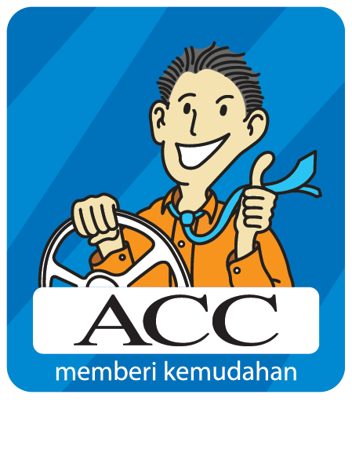

Data Intern — Brand Management Retention
Astra Credit Companies
Key contributions
- Automated multi-source record validation in Python, reducing routine processing time from 15 minutes to 2 minutes (approximately 87% faster)
- Processed and checked 47,000+ source rows for daily application-status and weekly F9PD reports
- Maintained a SharePoint-based dashboard tracking branch targets, results, carry-over performance, and product trends for 77 branches across six areas